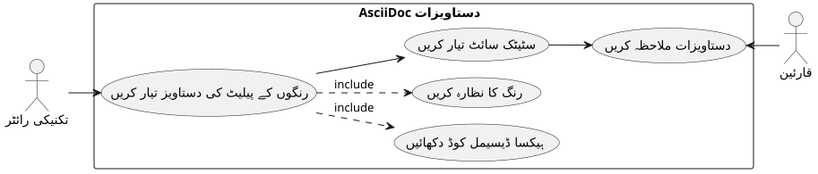
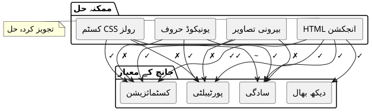
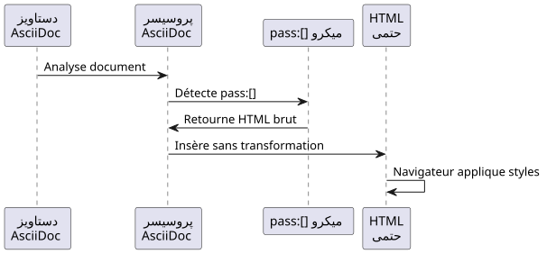
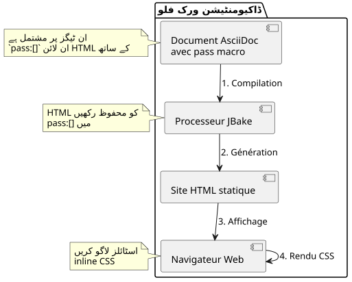

AsciiDoc میں رنگین مربعات دکھانا: ایک عملی گائیڈ
شائع شدہ: 01 November 2025
تعارف
فنّی دستاویزات کی ترتیب کرتے وقت، خاص طور پر اسٹائل گائیڈز یا یوزر انٹرфейس کی سبسفیKS کے لیے، رنگوں کی پالیٹ دکھانا عام طور پر ضروری ہوتا ہے۔ AsciiDoc، گرچہ دستاویزات کے لیے بہت طاقتور ہے، لیکن رنگوں کے نمونے دکھانے کے لیے نیٹیو سینٹکس فراہم نہیں کرتا۔ یہ مضمون مسئلے کی تفتیش کرتا ہے اور HTML انجیکشن پر مبنی یک خوشگوار حل پیش کرتا ہے۔
مسئلہ
استعمال کا سیاق
تصور کریں کہ آپ ویب ایپلیکیشن کے تھیم کی CSS متغیرات کی دستاویزات تیار کر رہے ہیں۔ آپ کو درکار ہے:
-
ہیکسیڈسیمل رنگ کے کوڈز فہرست بنائیں
-
ہر رنگ کا بصری پیشنمائش دکھائیں
-
دستاویز کی پڑھنے کی آسانی برقرار رکھیں
-
استاتیک سائٹ جنریٹرز JBake جیسے کی مطابقت کو یقینی بنانا

ممکن طریقے
ایک AsciiDoc دستاویز میں رنگ دکھانے کے لیے کئی حلوں پر غور کیا جا سکتا ہے :

اختیار 1 : کاراکٹرز یونیکوڈ
یونیکوڈ حروف استعمال کرنے کی طرح`■`(■) سادہ ہے لیکن محدود :
* ■ --accent-color: #7952b3 (violet Bootstrap)Limitations : رنگ پر کوئی کنٹرول نہیں، سسٹم فونت پر مشتمل ہے۔
اختيار 2: باہری تصاویر
ہر رنگ کے لیے PNG یا SVG تصاویر بنائیں :
* image:colors/violet.svg[width=16] --accent-color: #7952b3حدود : ثقيلة الصيانة، تكاثر الملفات، لا مزامنة تلقائية
اختیار 3 : وظائف CSS مخصص
CSS کلاسوں کو تعریف کریں اور انہیں AsciiDoc کے رولز کے ذریعے استعمال کریں :
* [.color-violet]##■## --accent-color: #7952b3Limitations : باہر کا اسٹائل شیٹ ضروری ہے، تمام ممکن رنگوں کی پہلے سے تعریف.
اختیار 4 : انجیکشن HTML (منتخب شدہ حل)
میکرو استعمال کریں``HTML کو ان لائن اسٹائل کے ساتھ انزیکٹ کرنے کے لیے :
* pass:[<span style="display:inline-block;width:1em;height:1em;
background:#7952b3;vertical-align:middle;margin-right:0.5em"></span>]
--accent-color: #7952b3 (violet Bootstrap)حل: HTML انجیکشن کے ساتھ
کام کرنے کا اصول
ماکرو``d’AsciiDoc خام مواد داخل کرنے کی اجازت دیتا ہے جو AsciiDoc پروسيسر tarafından تفسیر نہیں کیا جائے گا. یہ ہم HTML کو inline CSS styles کے ساتھ سیدھی طرح inject کرنے کی اجازت دیتا ہے.

تنفیذ
یہ HTML انجیکٹ کرنے والی ساخت ہے:
<span style="display:inline-block;
width:1em;
height:1em;
background:#7952b3;
vertical-align:middle;
margin-right:0.5em">
</span>CSS کے خواص کی وضاحت
| ملکیت | عمل |
|---|---|
|
width/height ki tareef karne ki ijazat deta hai, inline flow mein rehke |
|
مربے کا سائز فوانٹ کے سائز کے منسوب میں (responsive) |
|
دکھانے والا رنگ (آپ کی ضرورت کے متغیر) |
|
مربع کو مجاور متن کے ساتھ منظم کریں |
|
چوکور اور متن کے درمیان فاصلہ |
مثال کامل
یہ ایک مثال ہے جو موضوع کی پالیٹ کو ڈاکیومنٹ کرتی ہے :
== Thème Clair
* pass:[<span style="display:inline-block;width:1em;height:1em;background:#f8f9fa;border:1px solid #ccc;vertical-align:middle;margin-right:0.5em"></span>] --bg-primary: `#f8f9fa` (blanc cassé)
* pass:[<span style="display:inline-block;width:1em;height:1em;background:#212529;vertical-align:middle;margin-right:0.5em"></span>] --text-primary: `#212529` (noir très foncé)
* pass:[<span style="display:inline-block;width:1em;height:1em;background:#7952b3;vertical-align:middle;margin-right:0.5em"></span>] --accent-color: `#7952b3` (violet Bootstrap)
* pass:[<span style="display:inline-block;width:1em;height:1em;background:#61428f;vertical-align:middle;margin-right:0.5em"></span>] --accent-hover: `#61428f` (violet plus foncé)
* pass:[<span style="display:inline-block;width:1em;height:1em;background:#ffffff;border:1px solid #ccc;vertical-align:middle;margin-right:0.5em"></span>] --card-bg: `#ffffff` (blanc)کون درج ذیل رینڈر بناتا ہے :
موضوع روشی
-
--bg-primary:`#f8f9fa`(سفید مائل)
-
--text-primary:`#212529`(بہت گہرا سیاہ)
-
--accent-color:`#7952b3`(بنفشی Bootstrap)
-
--accent-hover:`#61428f`(گہرے بنفشی)
-
--card-bg:`#ffffff`(سفید)
بهتر بنانے کے طریقے اور اچھی رویć
ہلکی رنگات کو منیج کریں
بہت ہلکا رنگوں (سفید, بہت ہلکا سرمئی) کے لیے، ان کو سفید پس منظر پر مرئی بنانے کے لیے ایک کنارہ شامل کریں:
<span style="display:inline-block;width:1em;height:1em;
background:#ffffff;border:1px solid #ccc;
vertical-align:middle;margin-right:0.5em"></span>سرمئی سرحد (border:1px solid #ccc) سفید مربع کو سفید پسمنظر پر محدود کرنے کی اجازت دیتا ہے۔
چورhay کا سائز ملائیں
آپ مربعوں کے سائز کو اپنی ضرورت کے مطابق بدل سکتے ہیں:
* pass:[<span style="display:inline-block;width:1.5em;height:1.5em;background:#7952b3;vertical-align:middle;margin-right:0.5em"></span>] Grand carré
* pass:[<span style="display:inline-block;width:0.8em;height:0.8em;background:#7952b3;vertical-align:middle;margin-right:0.5em"></span>] Petit carréایکائی کا استعمال`em`یہ یقین دلاتا ہے کہ مربع فونٹ کے سائز کے ساتھ ایڈجسٹ ہوتے ہیں۔
محتوا بنائیں
خاص ضرورت کے لیے، آپ مختلف شکلیں بنا سکتے ہیں:
رنگین دائرہ
* pass:[<span style="display:inline-block;width:1em;height:1em;background:#7952b3;border-radius:50%;vertical-align:middle;margin-right:0.5em"></span>] Cercle violetرنگدار حد والا مربع
* pass:[<span style="display:inline-block;width:1em;height:1em;background:#ffffff;border:3px solid #7952b3;vertical-align:middle;margin-right:0.5em"></span>] Bordure violetteحل کی معماری

فوائد اور محدودیتیں
فوائد
-
✓ Autonomie : باہر کے فائلز پر کوئی انحصار نہیں
-
✓ Portabilité : AsciiDoc کے تمام پروسیسرز کے ساتھ کام کرتا ہے
-
✓ ہم آہنگی : رنگ کا کوڈ HTML میں مستقیماً موجود ہے
-
✓ Flexibilité : اسلوب کی مکمل شخصیتی
-
✓ مرمت : سادہ Hexadecimal کوڈ میں ترمیم
-
✓ جبییک کی سازگاری : مکمل طور پر سٹیٹیک سائٹ جنریٹرز کے ساتھ کام کرتا ہے
محدودیت
-
✗ لفاظی : HTML کوڈ تکراری AsciiDoc کے源 میں
-
✗ Source ki parhnay ki aasani : Source document ziyādah saaf nahi
-
✗ قابل رسائی : کوئی فطری متبادل متن نہیں (Manual طور پر شامل کرنا)
امکان پذیری میں بہتری
اسکرین ریڈرز کے لیے مربع کو رسائی پذیر بنانے کے لیے:
* pass:[<span role="img" aria-label="Couleur violet Bootstrap"
style="display:inline-block;width:1em;height:1em;background:#7952b3;
vertical-align:middle;margin-right:0.5em"></span>]
--accent-color: `#7952b3` (violet Bootstrap)خصوصیات`role="img"` et `aria-label`مدد کرنے والی ٹیکنالوجیز بصری مواد کو سمجھنا اور تصویر بنانا ممکن بناتی ہیں.
مثال واقعی: موضوعات کی دستاویز
یہ ایک مکمل مثال ہے جو کئی موضوعات کی وضاحت کرتی ہے:
= Guide des couleurs de l'application
== Thème Clair (`:root`)
* pass:[<span style="display:inline-block;width:1em;height:1em;background:#f8f9fa;border:1px solid #ccc;vertical-align:middle;margin-right:0.5em"></span>] --bg-primary: `#f8f9fa` (blanc cassé)
* pass:[<span style="display:inline-block;width:1em;height:1em;background:#212529;vertical-align:middle;margin-right:0.5em"></span>] --text-primary: `#212529` (noir très foncé)
* pass:[<span style="display:inline-block;width:1em;height:1em;background:#7952b3;vertical-align:middle;margin-right:0.5em"></span>] --accent-color: `#7952b3` (violet Bootstrap)
== Thème Sombre (`[data-bs-theme="dark"]`)
* pass:[<span style="display:inline-block;width:1em;height:1em;background:#212529;vertical-align:middle;margin-right:0.5em"></span>] --bg-primary: `#212529` (noir très foncé)
* pass:[<span style="display:inline-block;width:1em;height:1em;background:#ffffff;border:1px solid #999;vertical-align:middle;margin-right:0.5em"></span>] --text-primary: `#ffffff` (blanc)
* pass:[<span style="display:inline-block;width:1em;height:1em;background:#0d6efd;vertical-align:middle;margin-right:0.5em"></span>] --accent-color: `#0d6efd` (bleu Bootstrap)
== Thème Contraste Élevé (`[data-bs-theme="high-contrast"]`)
* pass:[<span style="display:inline-block;width:1em;height:1em;background:#000000;vertical-align:middle;margin-right:0.5em"></span>] --bg-primary: `#000000` (noir)
* pass:[<span style="display:inline-block;width:1em;height:1em;background:#ffffff;border:1px solid #000;vertical-align:middle;margin-right:0.5em"></span>] --text-primary: `#ffffff` (blanc)
* pass:[<span style="display:inline-block;width:1em;height:1em;background:#00ff00;vertical-align:middle;margin-right:0.5em"></span>] --accent-color: `#00ff00` (vert vif)نتیجہ
HTML انjekشن ماکرو کے ذریعے``AsciiDoc ٹیکنیکی دسکاری میں رنگ کے نمونے دکھانے کے لیے ایک شاندار اور عملی حل فراہم کرتا ہے۔ اگرچہ تھوڑا سیاپی ہے، یہ طریقہ حداکثر قابلحمل اور سادہ مرمت فراہم کرتا ہے۔
یہ تکنیک کسی بیرونی تنظیم کی ضرورت نہیں ہے، کوئی اضافی ستائل شیٹ نہیں، اور JBake اور تمام معيار AsciiDoc پروسيسرز کے ساتھ فوراً کام کرتی ہے۔
جب آپ اپنی پہلی رنگین مربع بنا لیتے ہیں، تو صرف HTML کوڈ کاپی پیسٹ کریں اور ہیکسیڈسیمل کوڈ تبدیل کر کے جلدی سے مکمل پیلٹ بنائیں۔
یہ تکنیک کسی بھی کاسٹوم وائسوال رینڈرنگ کی ضرورت ہونے والی دیگر استعمال کے مواقع پر کشادی گئی جا سکتی ہے: آئیکن، بیج، سادے چارٹس، یا کوئی بھی وائسوال جس میں سٹائل پر واضح کنٹرول کی ضرورت ہو۔
منابع
منتشر شدہ مضمون 2025-11-01 کو